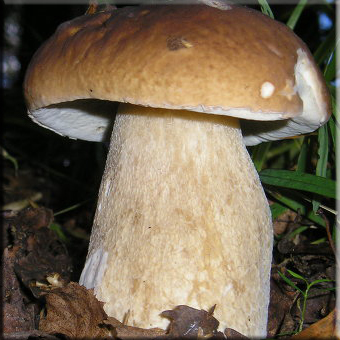

|
 |
 |
 |
 |
 |
Трубчатые грибы
| Белый гриб — самая желанная находка грибника. Красивый, вкусный, изумительно ароматный... Название он получил из-за своей мякоти: она белая, на разрезе не меняет цвета, остается белой и у высушенного гриба, и у вареного. В нижней части шляпки — слой трубочек. У молодого гриба он белый, но потом становится желто-зеленым. А вот верхняя сторона шляпки у белых грибов бывает разной — от темно-коричневой до светлой, почти белой. Темная шляпка обычно встречается у грибов, растущих в еловых и сосновых лесах, светлая—у растущих в березовых лесах. По-разному выглядят и ножки белых грибов. Встретить этот замечательный гриб в лесу можно с июня по октябрь. | ||
|  | Желчный гриб (горчёк, ложный белый гриб) несъедобен, но не ядовит. Он очень горький. Этот гриб похож на белый. Отличается такими признаками: шляпка снизу розовая, мякоть на разрезе розовеет, на ножке рисунок в виде темной сеточки (у белого гриба сеточка на ножке белая).
| |
| Подберёзовик (берёзовик) немного похож на белый гриб. Но шляпка у него более мягкая, ножка тоньше и длиннее. Цвет шляпки бывает разным: от темно-коричневого до белого. Это очень распространенный съедобный гриб. | ||
© Дубовая Василиса 2015